Stroke prediction with logistic regression
Introduction
Welcome to my data science project, where we harness the power of logistic regression and the programming language R to develop a predictive model for stroke. Our aim is to leverage valuable data, including gender, age, BMI, and history of heart diseases, to identify individuals at a higher risk of experiencing a stroke. Stroke is a critical medical condition that requires timely intervention to minimize its potentially severe consequences. By employing logistic regression, a popular statistical technique for binary classification, we can analyze the relationships between various risk factors and stroke occurrence. This enables us to build a robust model that accurately predicts the likelihood of stroke for individuals based on their specific attributes. With the versatility and efficiency of R, a powerful programming language for statistical computing, we can handle data manipulation, exploratory analysis, and model building seamlessly. By incorporating essential features such as gender, age, BMI, and history of heart diseases, our project endeavors to contribute to early detection and proactive stroke prevention strategies. Join us on this data-driven journey as we strive to enhance stroke risk assessment and ultimately improve the overall health outcomes for individuals at risk. The data set I use for this can be downloaded under [https://www.kaggle.com/datasets/fedesoriano/stroke-prediction-dataset].
Let’s first load the packages we will use:
library(dplyr)
library(readr)
library(tidyr)
library(ggplot2)
library(cowplot)
library(caret)
library(lmPerm)Preparation
We load the data set and exam it.
data <- read_csv('healthcare-dataset-stroke-data.csv')
dim(data)## [1] 5110 12colnames(data)## [1] "id" "gender" "age"
## [4] "hypertension" "heart_disease" "ever_married"
## [7] "work_type" "Residence_type" "avg_glucose_level"
## [10] "bmi" "smoking_status" "stroke"The data set contains 12 variables, with one column for the id, for 5110 observations. Our target variable is stroke coded as 0 if the patient did not have a stroke and 1 if he/she did.
table(data$stroke)##
## 0 1
## 4861 249round(mean(data$stroke), 3)## [1] 0.049data$stroke <- factor(data$stroke)This data set is highly unbalanced with only 249 of the 5110 (4.9%) having suffered from a stroke.
Since we have a manageable number of variables we will go through the rest of the columns one by one and look at their distribution and their relationship to the stroke column.
Gender
str(data$gender)## chr [1:5110] "Male" "Female" "Male" "Female" "Female" "Male" "Male" ...table(data$gender)##
## Female Male Other
## 2994 2115 1The first variable is the gender of the patient coded as ‘Male’, ‘Female’, and ‘Other’. Since there is only one observation containing ‘Other’ we will filter it out.
data <- data %>%
filter(gender != 'Other')
round(table(data$gender)/nrow(data), 2)##
## Female Male
## 0.59 0.41The data set consists of 59% female and 41% male patients.
gender_stroke <- data %>%
select(gender, stroke) %>%
table()
gender_stroke## stroke
## gender 0 1
## Female 2853 141
## Male 2007 108chisq.test(gender_stroke)##
## Pearson's Chi-squared test with Yates' continuity correction
##
## data: gender_stroke
## X-squared = 0.34, df = 1, p-value = 0.5598A confusion matrix of gender and stroke and a chi-squared test show that there is no association between both columns. We will therefore not use it in our model.
Age
The next column is the age of the patient in years.
str(data$age)## num [1:5109] 67 61 80 49 79 81 74 69 59 78 ...A <- ggplot(data, aes(age))+
geom_histogram(binwidth = 5)+
theme_minimal(base_size = 15)
B <- ggplot(data, aes(stroke, age, fill = stroke))+
geom_boxplot()+
scale_fill_manual(values = c('cornflowerblue', 'yellow'))+
theme_minimal(base_size = 15)+
guides(fill = 'none')
plot_grid(A, B)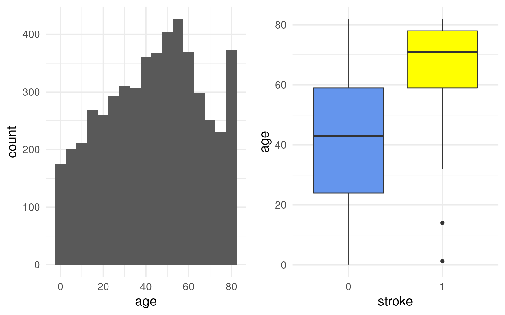
When we look at a histogram with a binwidth of 5 years we see that the distribution is skewed towards a higher age with a second peak at patients over 80.
We can also see a clear trend that patients who had a stroke were on average older than patients who did not have a stroke.
data %>%
mutate(age_group = ceiling(age/5)) %>%
group_by(age_group) %>%
summarize(risk = mean(stroke == 1),
min_age = min(age),
max_age = max(age),
avg_age = mean(age)) %>%
ungroup() %>%
ggplot(aes(x = avg_age, y = risk))+
geom_point()+
geom_smooth()+
theme_minimal(base_size = 15)+
ylab('Risk of having a stroke')+
xlab('Average age of the patient')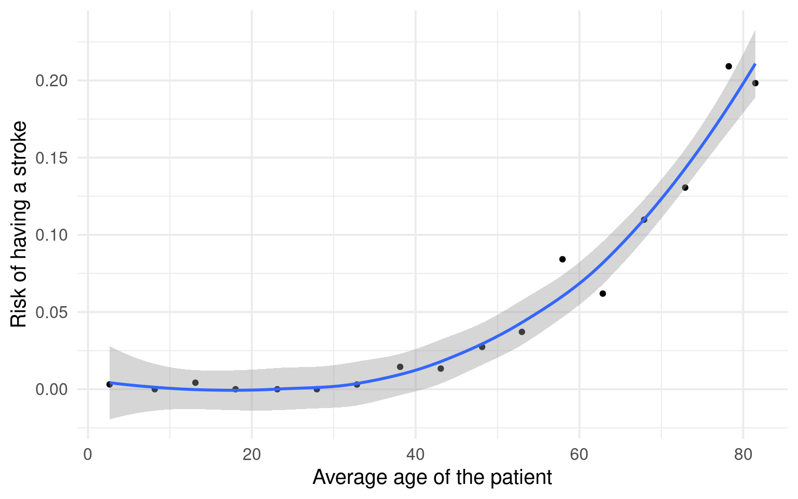
When we group the patients into age groups with a size of five years and calculate the risk of having a stroke as the percentage of patients who suffered from one, we can see that the risk is staying close to 0 until an age of 30 and then increases exponentially.
anova(lmp(age ~ stroke, data = data))## [1] "Settings: unique SS "
## Analysis of Variance Table
##
## Response: age
## Df R Sum Sq R Mean Sq Iter Pr(Prob)
## stroke 1 157097 157097 5000 < 2.2e-16 ***
## Residuals 5107 2455000 481
## ---
## Signif. codes: 0 '***' 0.001 '**' 0.01 '*' 0.05 '.' 0.1 ' ' 1data$hypertension <- factor(data$hypertension)As a statistical test for the association between age and stroke I chose an ANOVA with a permutation test, since we have highly unbalanced sample sizes for stroke. As expected from the visual examination of the data the average age of patients who suffered from a stroke differs significantly from the age of patients who did not.
Hypertension
str(data$hypertension)## Factor w/ 2 levels "0","1": 1 1 1 1 2 1 2 1 1 1 ...table(data$hypertension)##
## 0 1
## 4611 498round(table(data$hypertension)/nrow(data), 2)##
## 0 1
## 0.9 0.1The next column hypertension is coded 0 if the patient does not have hypertension and 1 if he/she did. Only 10% of patients have hypertension.
hypertension_stroke <- data %>%
select(hypertension, stroke) %>%
table()
hypertension_stroke## stroke
## hypertension 0 1
## 0 4428 183
## 1 432 66chisq.test(hypertension_stroke)##
## Pearson's Chi-squared test with Yates' continuity correction
##
## data: hypertension_stroke
## X-squared = 81.573, df = 1, p-value < 2.2e-16When looking at the confusion matrix between hypertension and stroke, we see that 13.3% of patients who have hypertension suffered from a stroke compared to the 4.0% of patients without hypertension. The chi-squared test between both variables is also highly significant.
ggplot(data, aes(hypertension,
age))+
geom_boxplot()+
theme_minimal(base_size = 15)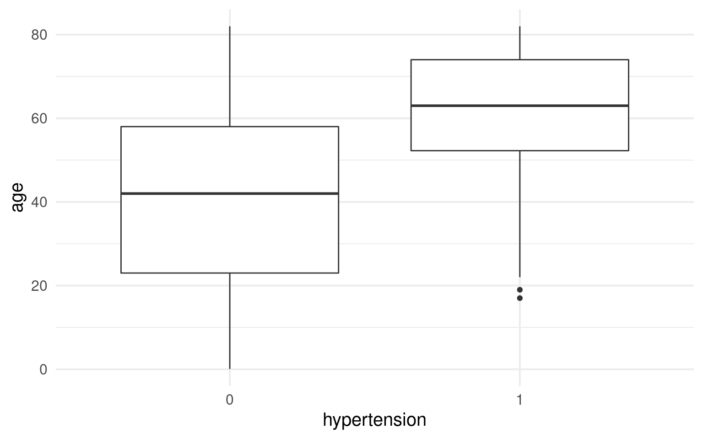
data %>%
mutate(age_group = ceiling(age/5)) %>%
group_by(age_group) %>%
summarize(risk = mean(hypertension == 1),
min_age = min(age),
max_age = max(age),
avg_age = mean(age)) %>%
ungroup() %>%
ggplot(aes(x = avg_age, y = risk))+
geom_point()+
geom_smooth()+
ylab('Risk of having hypertension')+
xlab('Average age of the patient')+
theme_minimal(base_size = 15)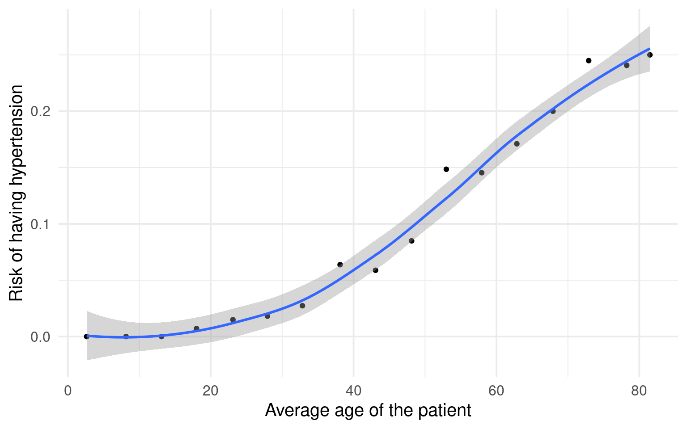
When we look at the association between hypertension and age, we see that the average age of patients with hypertension is higher than of patients without hypertension. But if we look at the percentage of hypertension in age groups of five years we see a flatter increase as with stroke but starting earlier (at around 20 years).
tmp <- data %>%
filter(age <= 50)%>%
select(hypertension, stroke) %>%
table()
knitr::asis_output('### Patients younger than 50')Patients younger than 50
round(tmp/rowSums(tmp), 2)## stroke
## hypertension 0 1
## 0 0.99 0.01
## 1 0.97 0.03For patients younger than 50 3% of the patients with hypertension suffered from a stroke compared to the 1% without hypertension.
Therefore, if we include hypertension into our model it might be able to differentiate better between younger patients (below 50) who had a stroke and who did not.
Heart disease
str(data$heart_disease)## num [1:5109] 1 0 1 0 0 0 1 0 0 0 ...data$heart_disease <- factor(data$heart_disease)
table(data$heart_disease)##
## 0 1
## 4833 276round(table(data$hypertension)/nrow(data), 2)##
## 0 1
## 0.9 0.1The next column heart_disease is coded as 0 if the patient does not have any heart disease and 1 if he/she does.
heart_disease_stroke <- data %>%
select(heart_disease, stroke) %>%
table()
heart_disease_stroke## stroke
## heart_disease 0 1
## 0 4631 202
## 1 229 47chisq.test(heart_disease_stroke)##
## Pearson's Chi-squared test with Yates' continuity correction
##
## data: heart_disease_stroke
## X-squared = 90.229, df = 1, p-value < 2.2e-16The distribution of heart_disease is similar as in stroke. The confusion matrix and the chi-squared test show a strong association between heart_disease and stroke.
ggplot(data, aes(heart_disease,
age))+
geom_boxplot()+
theme_minimal(base_size = 15)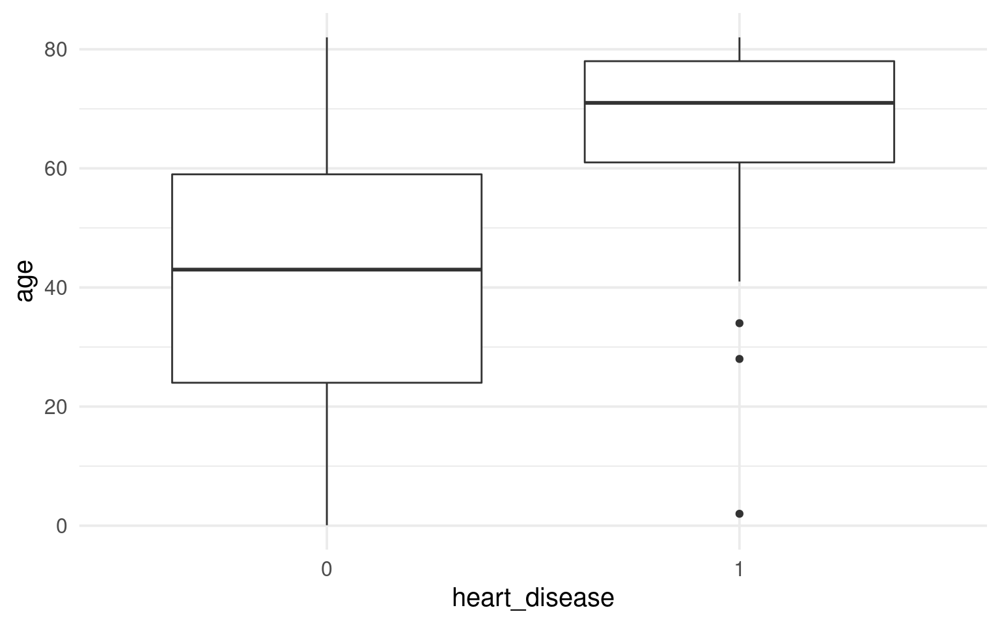
data %>%
mutate(age_group = ceiling(age/5)) %>%
group_by(age_group) %>%
summarize(risk = mean(heart_disease == 1),
min_age = min(age),
max_age = max(age),
avg_age = mean(age)) %>%
ungroup() %>%
ggplot(aes(x = avg_age, y = risk))+
geom_point()+
geom_smooth()+
ylab('Risk of having a heart disease')+
xlab('Average age of the patient')+
theme_minimal(base_size = 15)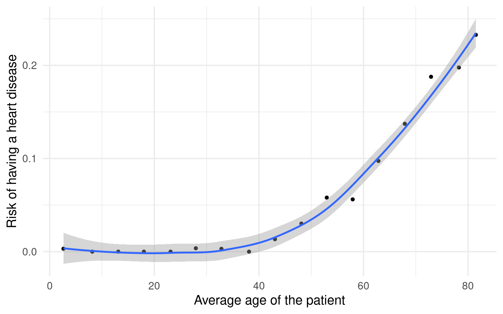
When looking at the association between heart_disease and age in total and in age groups, we see both times a similar result as with stroke.
tmp <- data %>%
filter(age < 50) %>%
select(heart_disease, stroke) %>%
table()
knitr::asis_output('### Patients younger than 50')Patients younger than 50
round(tmp/rowSums(tmp), 2)## stroke
## heart_disease 0 1
## 0 0.99 0.01
## 1 1.00 0.00tmp <- data %>%
filter(age > 50)%>%
select(heart_disease, stroke) %>%
table()
knitr::asis_output('### Patients older than 50')Patients older than 50
round(tmp/rowSums(tmp), 2)## stroke
## heart_disease 0 1
## 0 0.90 0.10
## 1 0.82 0.18knitr::asis_output('### All patients')All patients
round(heart_disease_stroke/rowSums(heart_disease_stroke), 2)## stroke
## heart_disease 0 1
## 0 0.96 0.04
## 1 0.83 0.17The confusion matrix between heart_disease and stroke for patients younger than 50 show that no patient with a heart disease had a stroke. The percentage of patients which suffered from both a stroke and have a heart disease is also the same for all patients and patients older than 50.
Therefore, I think that the column heart_disease will not bring any additional information for the prediction of a stroke.
Marriage status
str(data$ever_married)## chr [1:5109] "Yes" "Yes" "Yes" "Yes" "Yes" "Yes" "Yes" "No" "Yes" "Yes" ...round(table(data$ever_married)/nrow(data), 2)##
## No Yes
## 0.34 0.66The marriage status of the patients is contained in the column ever_married coded as ‘Yes’ and ‘No’, with 33% of patients having never been married.
marriage_stroke <- data %>%
select(ever_married, stroke) %>%
table()
marriage_stroke## stroke
## ever_married 0 1
## No 1727 29
## Yes 3133 220chisq.test(marriage_stroke)##
## Pearson's Chi-squared test with Yates' continuity correction
##
## data: marriage_stroke
## X-squared = 58.868, df = 1, p-value = 1.686e-14Using the same approach as before we can see that people who are or have been married had a higher chance of suffering from a stroke.
ggplot(data, aes(stroke,
age,
fill = stroke))+
geom_boxplot()+
facet_grid(~ever_married)+
scale_fill_manual(values = c('cornflowerblue', 'yellow'))+
theme_minimal(base_size = 15)+
labs(title = 'Was the patient ever married?')+
guides(fill = 'none')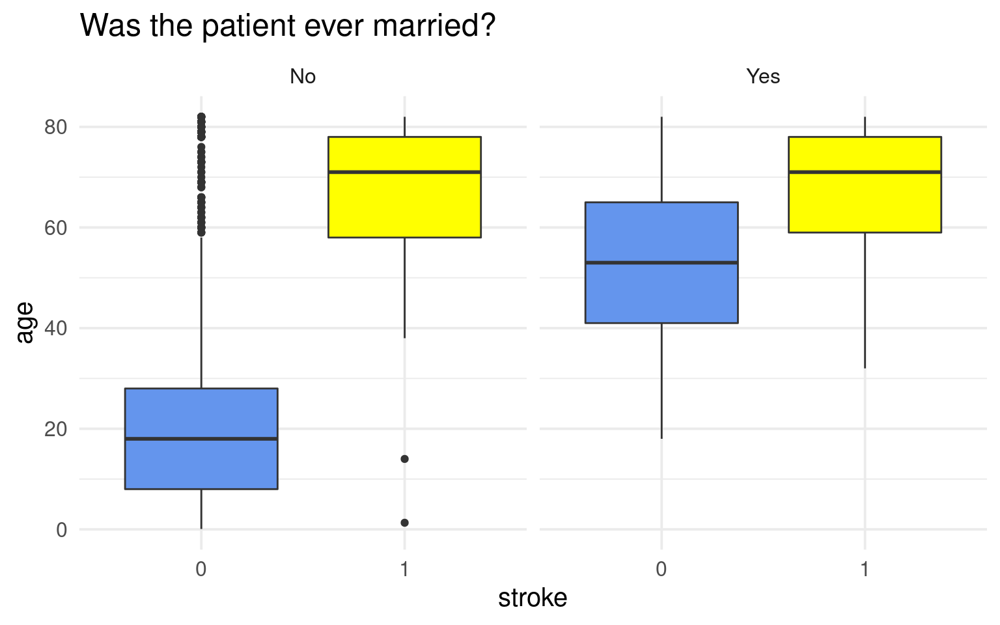
But when we also take the age of the patients into account we can see that people who were never married were simply younger and that within patients who are or have been married the ones who suffered from a stroke are also on average older.
Therefore this column adds no additional information and will not be included in the model.
Work type
str(data$work_type)## chr [1:5109] "Private" "Self-employed" "Private" "Private" "Self-employed" ...table(data$work_type)##
## children Govt_job Never_worked Private Self-employed
## 687 657 22 2924 819round(table(data$work_type)/nrow(data), 2)##
## children Govt_job Never_worked Private Self-employed
## 0.13 0.13 0.00 0.57 0.16ggplot(data, aes(x = work_type))+
geom_bar()+
theme_minimal(base_size = 15)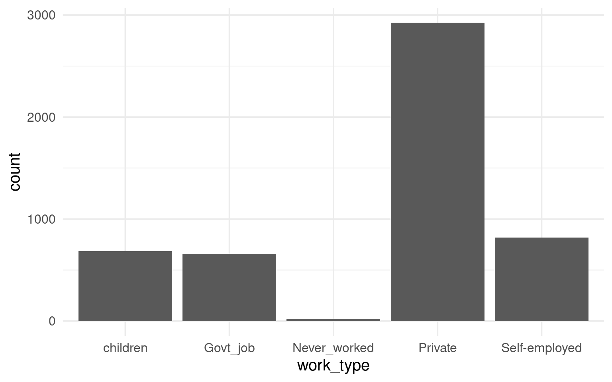
The column work_type contains information about the employment of the patients. The data contains children, patients working for the government (Govt_job), patients who never worked (Never_worked), and patients employed by the private sector (Private) or by themselves (Self-employed).
Most patients worked for the private sector (57%) and people who never worked are barely represented (< 1%). The other classes are fairly balanced.
ggplot(data, aes(stroke, age, fill = stroke))+
geom_boxplot()+
facet_grid(~work_type)+
scale_fill_manual(values = c('cornflowerblue', 'yellow'))+
theme_minimal(base_size = 15)+
guides(fill = 'none')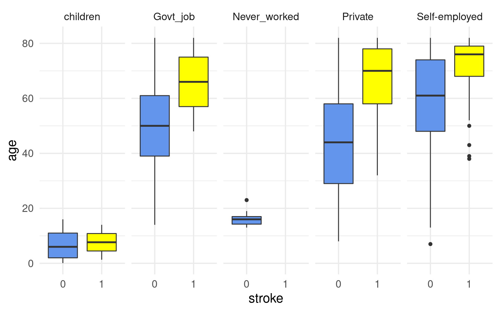
tmp <- table(data$work_type, data$stroke)
knitr::asis_output('### Share of people with a stroke per work type')Residence type
str(data$Residence_type)## chr [1:5109] "Urban" "Rural" "Rural" "Urban" "Rural" "Urban" "Rural" ...table(data$Residence_type)##
## Rural Urban
## 2513 2596round(table(data$Residence_type)/nrow(data), 2)##
## Rural Urban
## 0.49 0.51The column Residence_type informs us if the patient lives in a rural (49%) or an urban environment (51%).
residence_stroke <- data %>%
select(Residence_type, stroke) %>%
table()
residence_stroke## stroke
## Residence_type 0 1
## Rural 2399 114
## Urban 2461 135chisq.test(residence_stroke)##
## Pearson's Chi-squared test with Yates' continuity correction
##
## data: residence_stroke
## X-squared = 1.075, df = 1, p-value = 0.2998It is not associated with stroke and will not be included in the model.
Glucose level
str(data$avg_glucose_level)## num [1:5109] 229 202 106 171 174 ...ggplot(data, aes(avg_glucose_level))+
geom_histogram(bins = 50)+
theme_minimal(base_size = 15)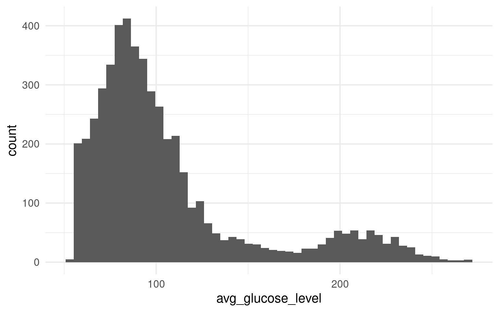
Next is the average glucose level in the blood which is given in the column avg_glucose_level. The distribution is approaching a bimodal distribution with a high peak at around 75 and a second small peak at 220.
ggplot(data, aes(x = stroke, y = avg_glucose_level))+
geom_boxplot()+
theme_minimal(base_size = 15)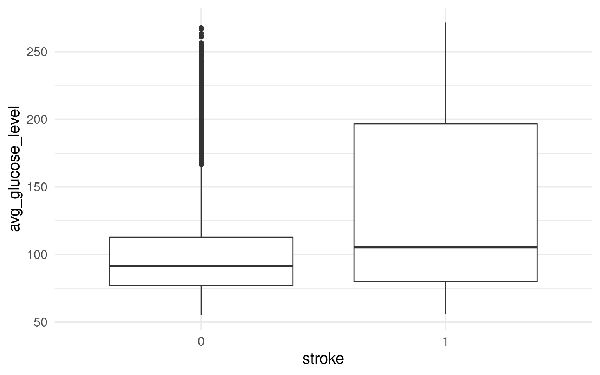
anova(lmp(avg_glucose_level ~ stroke, data = data))## [1] "Settings: unique SS "
## Analysis of Variance Table
##
## Response: avg_glucose_level
## Df R Sum Sq R Mean Sq Iter Pr(Prob)
## stroke 1 182494 182494 5000 < 2.2e-16 ***
## Residuals 5107 10292642 2015
## ---
## Signif. codes: 0 '***' 0.001 '**' 0.01 '*' 0.05 '.' 0.1 ' ' 1cat('Correlation between age and avg_glucose_level ', round(cor(data$age, data$avg_glucose_level), 2), '\n')## Correlation between age and avg_glucose_level 0.24Patients who suffered from a stroke have on average a higher average glucose level as shown in the boxplots and the ANOVA with a permutation test. It shows only a small positive correlation (r = 0.24) with age.
ggplot(data, aes(age, avg_glucose_level))+
geom_density2d_filled()+
facet_grid(~stroke)+
theme_minimal(base_size = 15)+
theme(legend.position = 'none')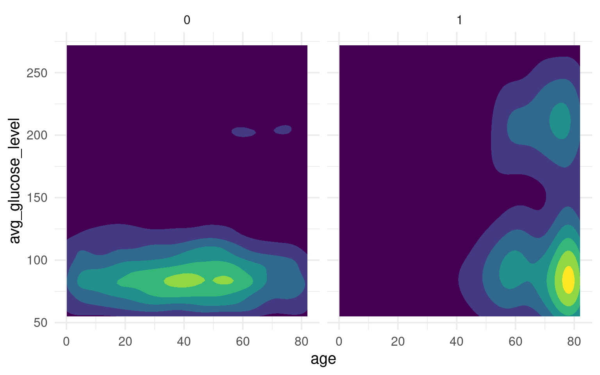
When looking at the 2D kernel density estimate of age and avg_glucose_level separated for patient who suffered from a stroke and those that did not, we can see that patients who had a stroke were on average older and/or had a higher average glucose level. Therefore, the average glucose level in the blood could help in our prediction.
BMI
str(data$bmi)## chr [1:5109] "36.6" "N/A" "32.5" "34.4" "24" "29" "27.4" "22.8" "N/A" ...NA_values <- unique(data$bmi[which(is.na(as.numeric(data$bmi)))])
NA_values## [1] "N/A"data$bmi <- as.numeric(gsub(NA_values, NA, data$bmi))
sum(is.na(data$bmi))## [1] 201The column containing the body mass index (BMI) of the patients contains 201 missing values that needed recoding.
knitr::asis_output('### Association between stroke and having a missing value at BMI')Association between stroke and having a missing value at BMI
table(data$stroke, is.na(data$bmi))##
## FALSE TRUE
## 0 4699 161
## 1 209 40chisq.test(table(data$stroke, is.na(data$bmi)))##
## Pearson's Chi-squared test with Yates' continuity correction
##
## data: table(data$stroke, is.na(data$bmi))
## X-squared = 98.559, df = 1, p-value < 2.2e-16We can also see that the data is not missing at random, since patients with missing BMI values also suffered more often from a stroke (20.0%) compared to those without missing values (4.3%). Excluding the patients with missing values would make the data set even more unbalanced and a naive imputation method such as a median imputation would most likely lead to a bias in the prediction of stroke later.
trc <- trainControl(method = 'cv',
number = 5)
bmi_imputation_model <- train(bmi ~ .,
method = 'ranger',
data = data[!is.na(data$bmi), ],
trControl = trc)
data$bmi[is.na(data$bmi)] <- predict(bmi_imputation_model,
newdata = data[is.na(data$bmi), ])We therefore use all the other columns to perform an imputation with a random forest using the data without missing values as a training set with 5 times cross-validation and predict the missing BMI values. A random forest imputation has the advantage here that it can deal with the different data types and should out of the box give a more accurate imputation than just the median, since our sample size is sufficiently large.
ggplot(data, aes(stroke, bmi))+
geom_boxplot()+
theme_minimal(base_size = 15)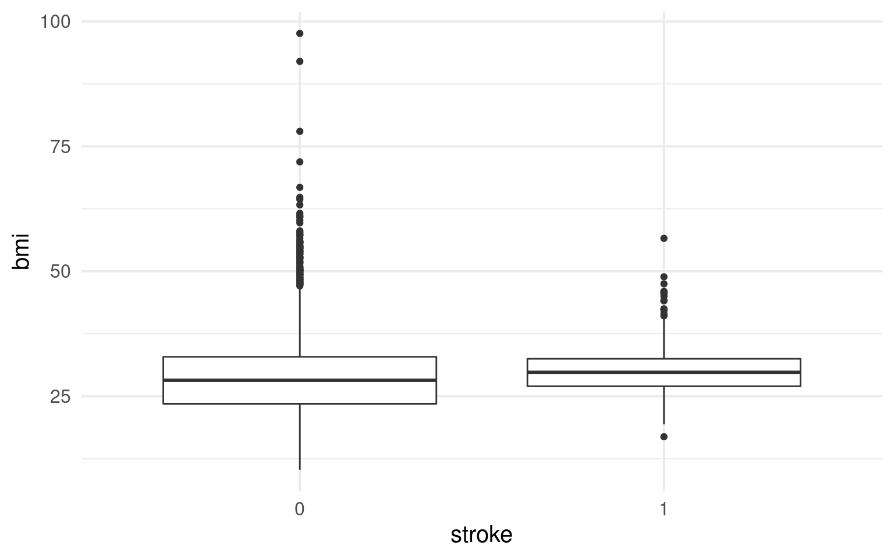
anova(lmp(bmi ~ stroke, data = data))## [1] "Settings: unique SS "
## Analysis of Variance Table
##
## Response: bmi
## Df R Sum Sq R Mean Sq Iter Pr(Prob)
## stroke 1 548 547.73 5000 < 2.2e-16 ***
## Residuals 5107 304329 59.59
## ---
## Signif. codes: 0 '***' 0.001 '**' 0.01 '*' 0.05 '.' 0.1 ' ' 1After imputation an ANOVA with a permutation test shows that patients with a stroke had on average a higher BMI. We will therefore include the BMI in our model.
Smoking status
str(data$smoking_status)## chr [1:5109] "formerly smoked" "never smoked" "never smoked" "smokes" ...table(data$smoking_status)##
## formerly smoked never smoked smokes Unknown
## 884 1892 789 1544data$smoking_status[data$smoking_status == 'Unknown'] <- NA
round(mean(is.na(data$smoking_status)), 3)## [1] 0.302The last column smoking_status informs us if the patient formerly smoked, never smoked or still smokes. The class ‘Unknown’ is recoded as NA, leading to a large amount of missing data (30.2%).
round(table(data$work_type,
data$smoking_status)/rowSums(table(data$work_type,
data$smoking_status)), 2)##
## formerly smoked never smoked smokes
## children 0.19 0.78 0.03
## Govt_job 0.25 0.53 0.22
## Never_worked 0.00 1.00 0.00
## Private 0.23 0.53 0.24
## Self-employed 0.31 0.50 0.19summary(data$age[data$work_type == 'children' &
!is.na(data$smoking_status)])## Min. 1st Qu. Median Mean 3rd Qu. Max.
## 10.00 11.00 12.00 12.35 13.00 16.00While checking for a connection between smoking_status and work_type for a possible association, I discovered that 19% of the patients marked as children are classified as ‘formerly smoked’ and 3% as ‘smokes’. Since 75% of patients marked as children are 13 years or younger and the maximum age is 16 years, I suspect some misclassification in the smoking status. This and the high amount of missing data suggest to exclude it from further analysis.
Prediction
Now we want to use the variables age, hypertension, avg_glucose_level, and bmi to predict if a patient had a stroke or not. Since the data set is highly imbalanced, classifying all patients as having no stroke would lead to an accuracy of 0.95. Therefore it is important that we rather use the specifity (does the model classify all patients who had a stroke correctly) and the sensitivity (does the model classify all patients who did not have a stroke correctly?) to rank our models.
We will use a 5-times cross-validation with 5 repetitions for all models and use the specifity as an evaluation metric, since it is more important to catch all cases with a stroke. The first model is a standard logistic regression.
Standard model
data <- data %>%
mutate(nr = 1:nrow(data),
weights = ifelse(stroke == 1, 0.95, 0.05))
trc <- trainControl(method = 'repeatedcv',
number = 5,
repeats = 10,
summaryFunction = twoClassSummary)
model_standard <- train(stroke ~ age + hypertension + avg_glucose_level + bmi,
method = 'glm',
trControl = trc,
family = 'binomial',
data = data,
metric = 'Spec')
confusionMatrix(model_standard)## Cross-Validated (5 fold, repeated 10 times) Confusion Matrix
##
## (entries are percentual average cell counts across resamples)
##
## Reference
## Prediction 0 1
## 0 95.1 4.9
## 1 0.0 0.0
##
## Accuracy (average) : 0.9513As already expected the standard model classified all patients as not having a stroke leading to an accuracy of 0.95. This means, on the other Hand, that all patients who had a stroke were misclassified (specifity = 0).
Weights and SMOTE
To solve the problem with the imbalanced data we will give the patients who suffered from a stroke a higher weight (0.95) compared to the ones who did not (0.05). As a second approach we will use SMOTE (Synthetic minority oversampling technique).
model_weights <- train(stroke ~ age + hypertension + avg_glucose_level + bmi,
method = 'glm',
trControl = trc,
family = 'binomial',
weights = weights,
data = data,
metric = 'Spec')
trc_smote <- trainControl(method = 'repeatedcv',
number = 5,
repeats = 10,
sampling = 'smote',
summaryFunction = twoClassSummary)
model_smote <- train(stroke ~ age + hypertension + avg_glucose_level + bmi,
method = 'glm',
trControl = trc_smote,
family = 'binomial',
data = data,
metric = 'Spec')
tmp <- resamples(list(standard = model_standard,
weights = model_weights,
smote = model_smote))
summary(tmp)[['statistics']][c('Spec', 'Sens')]## $Spec
## Min. 1st Qu. Median Mean 3rd Qu. Max. NA's
## standard 0.0000000 0.0000000 0.0 0.0000000 0.00 0.00 0
## weights 0.6122449 0.7638776 0.8 0.8019837 0.84 0.92 0
## smote 0.6326531 0.7600000 0.8 0.7902531 0.82 0.90 0
##
## $Sens
## Min. 1st Qu. Median Mean 3rd Qu. Max. NA's
## standard 1.0000000 1.0000000 1.0000000 1.0000000 1.0000000 1.0000000 0
## weights 0.6851852 0.7276235 0.7345679 0.7341975 0.7415123 0.7633745 0
## smote 0.7047325 0.7278807 0.7355967 0.7348148 0.7404835 0.7654321 0A <- bwplot(tmp, metric = 'Spec')
B <- bwplot(tmp, metric = 'Sens')
plot_grid(A, B)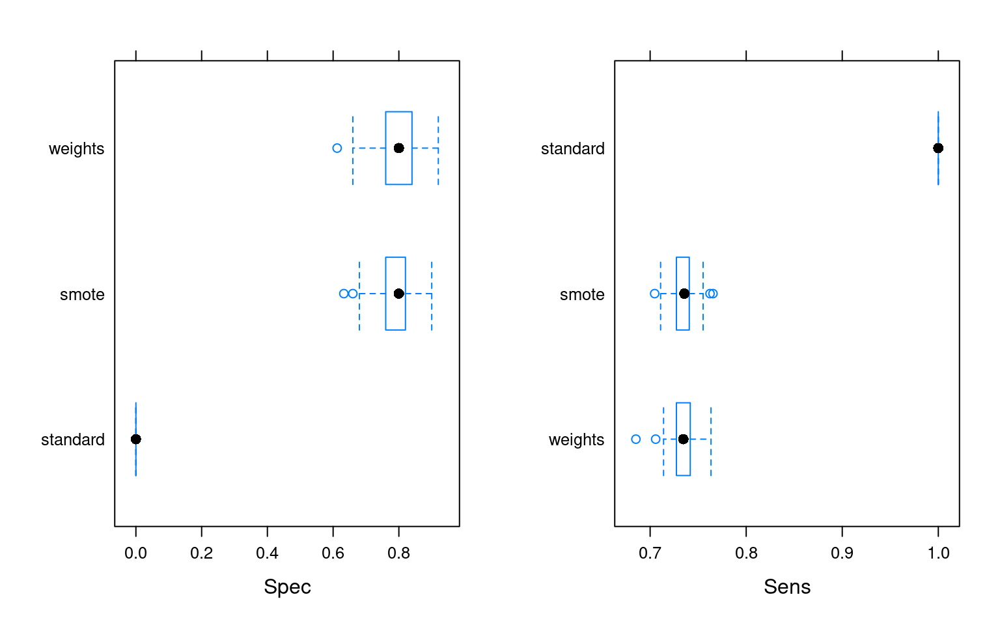
Both approaches improve the specifity of the model to 0.79 while decreasing its sensitivity to 0.73. This means that more patients who did not have a stroke are misclassified, but most patients who had a stroke were correctly classified.
Regularization
We can try to improve the logistic regression by also using two regularization approaches, namely ridge and lasso regression.
model_weights_reg <- train(stroke ~ age + hypertension + avg_glucose_level + bmi,
method = 'glmnet',
trControl = trc,
family = 'binomial',
weights = weights,
data = data,
metric = 'Spec',
tuneGrid = expand.grid(
alpha = c(0, 1),
lambda = 0:10/10
))
model_smote_reg <- train(stroke ~ age + hypertension + avg_glucose_level + bmi,
method = 'glmnet',
trControl = trc_smote,
family = 'binomial',
data = data,
metric = 'Spec',
tuneGrid = expand.grid(
alpha = c(0, 1),
lambda = 0:10/10
))
plot(model_weights_reg)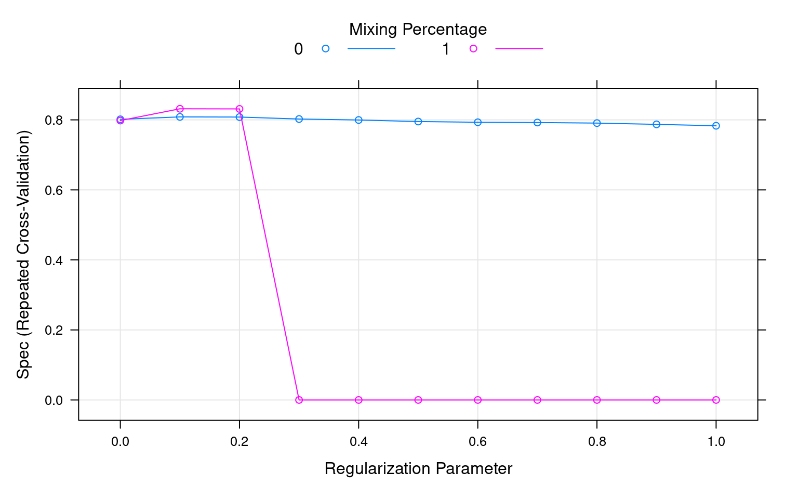
plot(model_smote_reg)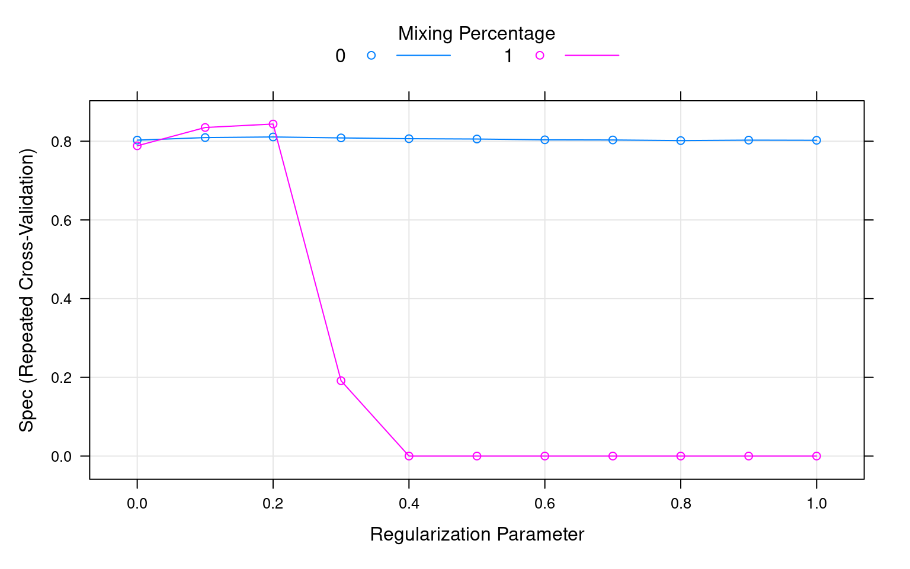
Both the approach with weights and with SMOTE optimized the specifity using lasso regression. Let’s see how they perform compared to the previous models.
tmp <- resamples(list(standard = model_standard,
weights = model_weights,
smote = model_smote,
weights_reg = model_weights_reg,
smote_reg = model_smote_reg))
summary(tmp)[['statistics']][c('Spec', 'Sens')]## $Spec
## Min. 1st Qu. Median Mean 3rd Qu. Max. NA's
## standard 0.0000000 0.0000000 0.0000000 0.0000000 0.0000000 0.0000000 0
## weights 0.6122449 0.7638776 0.8000000 0.8019837 0.8400000 0.9200000 0
## smote 0.6326531 0.7600000 0.8000000 0.7902531 0.8200000 0.9000000 0
## weights_reg 0.7200000 0.8163265 0.8283673 0.8317143 0.8550000 0.9183673 0
## smote_reg 0.7346939 0.8200000 0.8485714 0.8437551 0.8793878 0.9400000 0
##
## $Sens
## Min. 1st Qu. Median Mean 3rd Qu. Max. NA's
## standard 1.0000000 1.0000000 1.0000000 1.0000000 1.0000000 1.0000000 0
## weights 0.6851852 0.7276235 0.7345679 0.7341975 0.7415123 0.7633745 0
## smote 0.7047325 0.7278807 0.7355967 0.7348148 0.7404835 0.7654321 0
## weights_reg 0.6738683 0.6995885 0.7067901 0.7084774 0.7191358 0.7427984 0
## smote_reg 0.6502058 0.6838992 0.6954733 0.6922840 0.7024177 0.7222222 0A <- bwplot(tmp, metric = 'Spec')
B <- bwplot(tmp, metric = 'Sens')
plot_grid(A, B)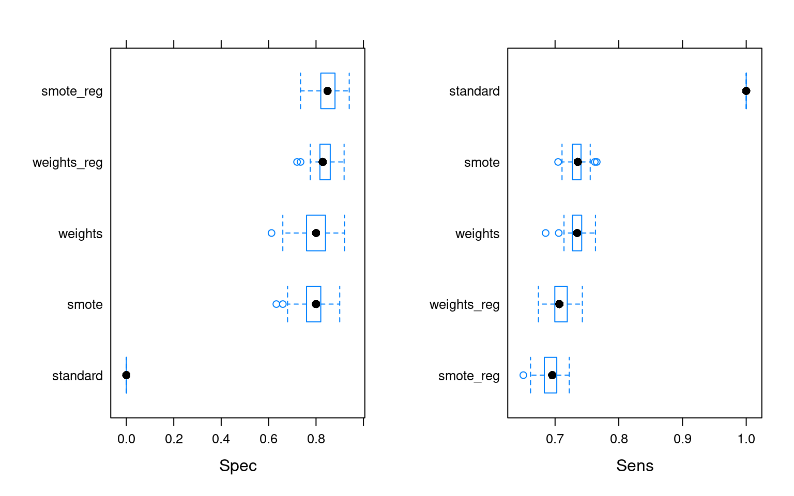
knitr::asis_output('### Balanced accuracy')Balanced accuracy
round((summary(tmp)[['statistics']][['Sens']][, 'Mean'] + summary(tmp)[['statistics']][['Spec']][, 'Mean'])/2, 2)## standard weights smote weights_reg smote_reg
## 0.50 0.77 0.76 0.77 0.77The lasso regression with weights achieved on average a specifity of 0.83 and with smote of 0.85, will decreasing the sensitivity to 0.71 and 0.69, respectively. When looking at the balanced accuracy (the sum of the specifity and the sensitivity divided by two) both approaches with regularization perform slightly better compared to the approaches without. Since the lasso regression using SMOTE achieves the highest specifity it may be the best model, since it should be more beneficial to classify patients with a stroke correctly, while risking the misclassification of patients without a stroke.